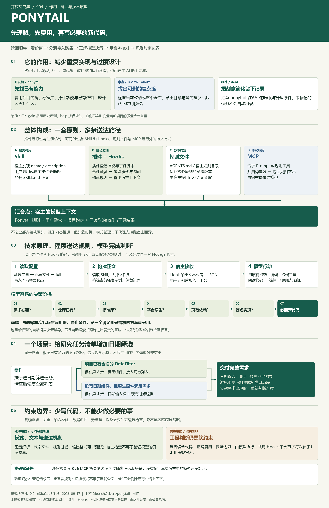

{kind=link}
普通请求不一定每轮重发规则
共用 mode-tracker 的这个分支，对普通请求保持静默。OpenCode 适配器则在每轮 system transform 中追加规则。不能把某一宿主的行为推广到全部接入方式。
004 / 从文件、事件到模型行为
Skill 写明应该怎样开发；插件与接入层决定何时把规则交给 AI；模型结合项目代码决定具体怎样实现。
源码基准 v4.10.0 / e3ba2aa · 含 7 步真实 Hook 脚本验证 · 未调用模型
原理全景图 / 从整体到细节
从上往下看：能力 → 四条接入路径 → 上下文与决策 → 日期筛选案例 → 约束边界。四条路径可按宿主选择；规则进入上下文后，具体开发仍由 AI 和宿主工具执行。点击图片可放大查看。

| 组成 | 存放或执行什么 | 解决的问题 | 不负责什么 |
|---|---|---|---|
Skillskills/ponytail/SKILL.md | 元数据、角色设定、七级决策阶梯、工程规则、模式与例外。 | 告诉模型遇到开发任务时，如何选方案、如何取舍。 | 不会自行执行文件搜索，也不会自动证明方案正确。 |
插件.codex-plugin/plugin.json 等 | 插件身份、技能目录、Hooks 路径和宿主界面信息；不同宿主格式不同。 | 让宿主一次安装后能发现技能并注册接入脚本。 | 插件这个包装本身不是模型，也不是工程决策算法。 |
Hookshooks/*.js + 事件配置 | 在指定事件读取模式、构建规则、写状态、输出上下文。 | 自动激活、模式管理，以及适用宿主中的子代理规则传递。 | 这里的三个共用 Hooks 不检查每次文件修改，也不阻止过度设计的代码写入。 |
规则文件AGENTS.md / 宿主规则目录 | 供宿主读取的一份紧凑工程规则。 | 在不使用动态插件机制时，也能把原则加入上下文。 | 单独复制它，不会同时获得六项技能、状态管理和全部命令。 |
MCP 服务ponytail-mcp/index.js | 通过标准协议提供一个 Prompt 和一个只读规则工具。 | 让支持 MCP 的宿主按需取回规则文本。 | 本服务不扫描仓库、不生成补丁、不运行模型，也不自动常驻每轮。 |
宿主 AI 助手模型 + 文件/终端等工具 | 管理对话、组织上下文，执行模型提出的工具调用。 | 真正读取项目、修改代码、运行测试，完成用户需求。 | Ponytail 不会替宿主增加原本没有的工具权限。 |
依据：核心技能、插件清单、共用 Hooks 配置、紧凑规则、MCP 实现。
插件把两者登记给宿主。启动事件触发脚本，脚本直接读取核心 SKILL.md 并输出文本；这条路径不要求模型先主动选择或调用该 Skill。
此路径不依赖 MCP，也不要求再复制一份 AGENTS.md。
这是根据源码绘制的路径讲解，选择选项不会安装、启用插件或修改真实配置。
下面采用“宿主支持共用 Hooks、默认 full 模式”的路径。前三步送入规则；后续代码阅读与实现由模型和宿主完成。
以仓库提供的插件清单为例，skills 指向技能目录，hooks 指向事件配置。配置将 SessionStart、UserPromptSubmit、SubagentStart 映射到三个 Node.js 脚本。
插件声明的是“有哪些东西、何时执行”，尚未对你的项目做任何分析。
plugin.json ↗ponytail-activate.js 调用 getDefaultMode()：有效环境变量优先，其次配置文件，最后回退到 full。它写入 .ponytail-active，然后调用 getPonytailInstructions(mode)。
构建器读取核心 Skill 正文，移除 YAML 文件头，只保留当前强度对应的表格行和示例；一般规则与安全边界继续保留。文件读取失败时有内置回退文本。
activate ↗ instructions ↗writeHookOutput() 按宿主输出不同结构：可能是普通文本，也可能是 JSON 中的 hookSpecificOutput.additionalContext 或其他宿主字段。宿主必须识别并接收这些输出，规则才实际到达模型。
宿主原有指令 + 项目规则 + Ponytail 工程原则 + 用户需求 + 已读取代码与工具结果
不是改模型参数，也不是训练一个新模型；只是让模型在当前任务中多读到一组相关指令。具体优先级由宿主决定，插件不能自行凌驾于更高优先级约束。
runtime ↗你说“给任务列表加日期筛选”。在本次验证的共用 Hook 输出分支里，普通请求经过 mode-tracker 时没有新增输出；核心规则已经由会话启动提供。模型再调用宿主的搜索、读文件等工具，确认已有列表、组件与日期字段。
“查找已有能力”由模型调用工具完成。Hook 并没有替它搜索项目，也没有预先建立可复用组件数据库。
如果已有 DateFilter 且满足要求，在“仓库内复用”处停止；如果没有，继续评估语言内置能力与浏览器原生控件。只有现成能力不够时，才补必要的新代码。
本例中可以选择原生日期输入框加现有列表过滤。选择来自模型对需求和代码的理解，不是一个返回固定答案的 if/else 检查器。
返回可操作的日期筛选案例 ↗模型通过宿主工具编辑文件，保留标签、空状态和明确需求，并执行适当检查。技能要求非平凡逻辑留下可运行验证，但是否真的完整做到，仍需检查交付。
Ponytail 没有在这条共用路径上审查每次写文件的补丁并拒绝违规修改。文本强调“必须”，不等于程序自动拦截。
ponytail-review、ponytail-audit、ponytail-debt 是其他技能，分别指导模型检查当前 diff、全库复杂度和显式债务标记。它们不是每次开发结束后必然自动运行的流水线。
gain 展示预设历史评测，help 提供帮助。MCP 服务仅暴露核心规则，不会自动将六个 Skill 全部变成六个 MCP 工具。
review ↗ 核对 MCP 注册项 ↗在隔离目录中运行固定版本的三个上游脚本，用环境变量选择其 Codex 格式输出分支，逐次输入事件。未启动真实宿主、模型或 MCP 客户端，也未改变现有插件配置。
| 执行顺序 | 状态文件 | 输出规则正文？ | 上下文字符数 |
|---|---|---|---|
| 会话启动 | full | 完整决策规则 | 5229 |
| 普通开发请求 | full | 无输出 | 0 |
| 切换 lite | lite | 仅状态通知 | 35 |
| 子代理启动 | lite | 完整决策规则 | 5202 |
| 关闭模式 | 无标记 | 仅状态通知 | 17 |
| 关闭后的子代理 | 无标记 | 无输出 | 0 |
| 再次启动激活脚本 | full | 完整决策规则 | 5229 |
7 步验证通过。字符数是 additionalContext 文本长度，不是 token 数，也不是整个模型上下文大小。查看保存的运行摘要 ↗
共用 mode-tracker 的这个分支，对普通请求保持静默。OpenCode 适配器则在每轮 system transform 中追加规则。不能把某一宿主的行为推广到全部接入方式。
lite 切换在该分支只写状态并输出 35 字符的通知；子代理启动才读取新状态并得到 lite 正文。父会话中的技能加载和最终效果仍取决于宿主，单看标记不能证明模型已正确切换。
off 删除活动状态并通知关闭，之后的子代理不再注入。已有对话中的规则文本没有被物理移除；再次运行激活脚本会按默认 full 重新加载。
“懒惰资深开发者”只是角色设定。真正可执行的指导来自下面这些具体要求，它们一起把优化目标限定为“满足需求前提下的最小实现”。
读任务涉及的代码、追踪真实流程；修复前找所有调用方。这样减少只修表面症状、忽略公共路径的风险。
必要性 → 仓库已有实现 → 标准库 → 平台原生 → 已安装依赖 → 简短实现 → 必要的新代码。
找到足够的方案就采用，不为未提出的扩展添加工厂、接口、配置或新依赖。已有架构若有多余包装，也可以被质疑。
输入校验、数据保护、安全、无障碍和明确需求不能因精简被删掉；真实硬件所需校准也不能省略。
有真实局限的简化用 ponytail: 注释说明上限和升级触发条件；debt 技能再将这些显式标记汇总。
非平凡逻辑要有可运行检查。默认简短解释，用户明确要求的详细报告则应完整提供，不因“少写”缩减交付范围。
参数解析、配置优先级、模式过滤、状态读写、宿主输出格式可以用确定性测试验证。它们主要保障规则如何送达。
是否完整阅读、是否复用正确、是否保留所有边界，仍由模型执行。本库没有将这些原则转换为统一的 AST 检查器或强制代码提交门禁。
即使规则成功进入上下文，也可能被模型遗漏、误解或与其他指令产生冲突。因此实际交付仍要做功能测试和代码审查。核对完整规则与例外 ↗
AGENTS.md 等保存精简正文，适合通过项目约定注入的场景。它们与完整 Skill 不是完全同一份文本：核心原则对齐，但没有完整的技能元数据、强度示例和动态脚本能力。
上游检查脚本比较紧凑副本，并核查核心短语。它维护内容一致性，不负责让宿主加载文件。
已有静态规则时不要假设 off 能关闭它。Cursor 适配器检测到对应项目规则后，会避免重复注入，并明确提示模式切换不可用。
副本检查脚本 ↗Prompt ponytail 返回一条包含规则的 user 消息；工具 ponytail_instructions 返回文本和 { mode, instructions }。两者复用同一规则构建器。
服务通过 stdio 通信。公开 mode 参数仅接受 lite/full/ultra；没有通过这个接口管理完整常驻状态，也没有将项目源码发给服务做分析。
“MCP 工具”在这里是取文本的接口。宿主还要把返回内容用于模型上下文；不会仅因 MCP 服务已连接，就自动在每轮遵守规则。
MCP 定位与边界 ↗只调用 Skill，也能表达核心开发原则。完整插件增加自动加载和模式管理；静态规则降低接入门槛；MCP 提供标准化的按需取用接口。叠加所有入口未必更有效，还可能重复注入或造成模式冲突。
已阅读固定 commit 的核心规则、插件清单、Hooks、runtime、配置解析、OpenCode 适配器和 MCP 实现；实际运行 7 步隔离脚本序列，验证模式文件和输出内容的变化。
没有运行真实宿主中的完整安装 / 会话流程，没有发起模型请求，也没有测得代码质量、成本或时间收益。网页中的路径切换用于讲解，不调用上游程序；事件表来自已保存的实际脚本运行摘要。